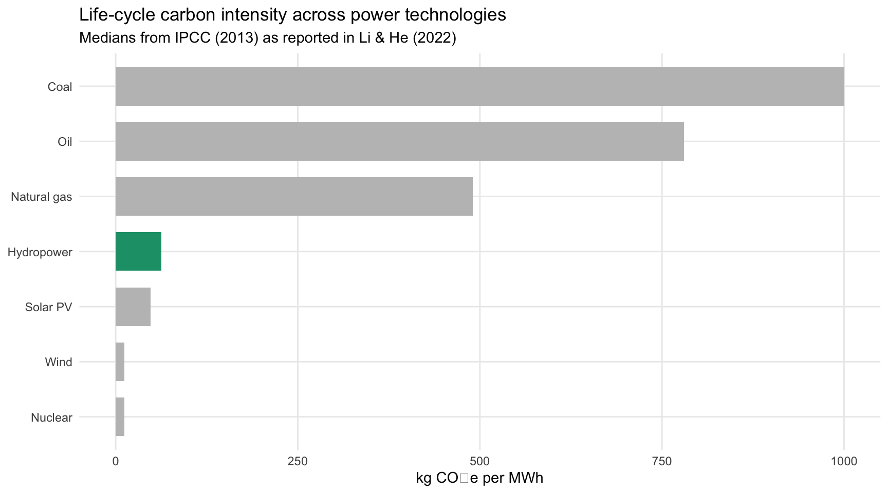
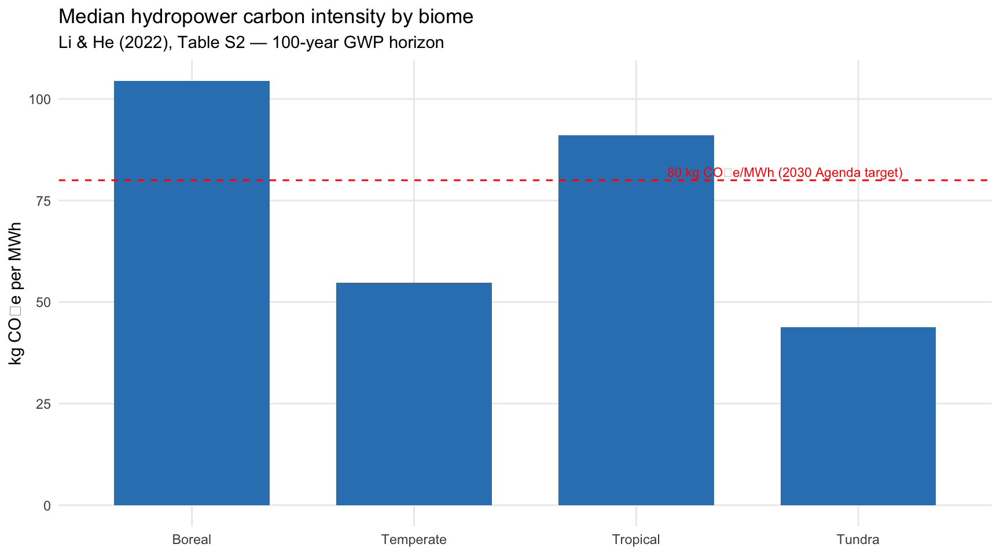
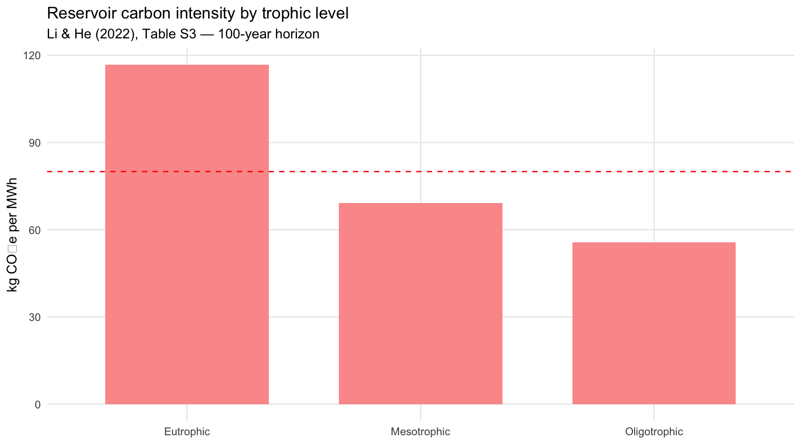
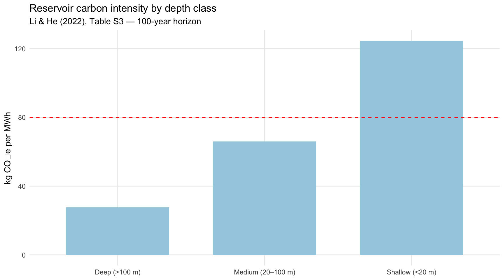
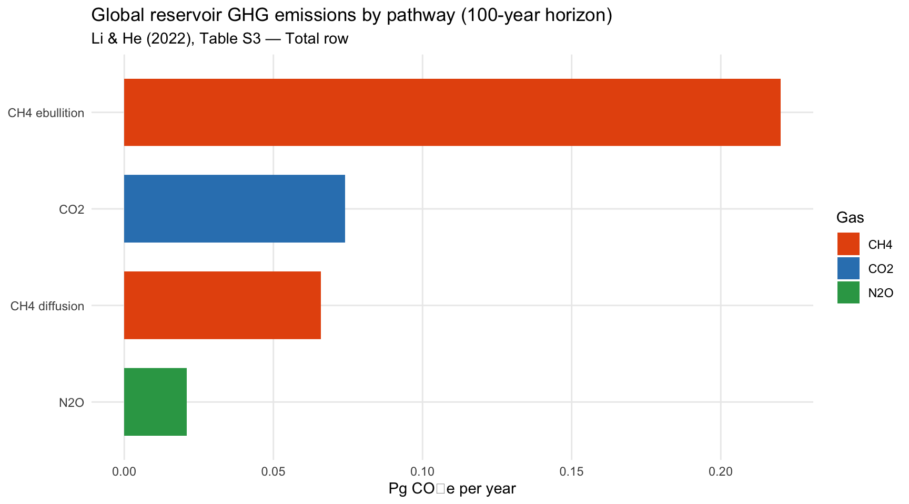
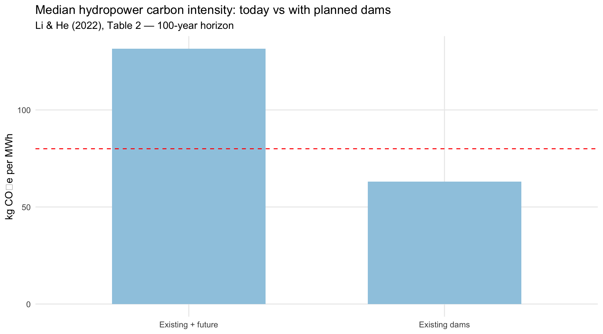

# 1. Energy-type carbon intensities (medians) from Li & He text (IPCC 2013 values)
energy_ci <- tribble(
~source, ~ci_median,
"Coal", 1000, # kg CO2e/MWh
"Oil", 780,
"Natural gas", 490,
"Hydropower", 63, # median CI for existing hydro in Li & He
"Solar PV", 48,
"Wind", 12,
"Nuclear", 12
)
# 2. Biome-level GHG flux & CI (Table S2, 100-year horizon)
biome_ci <- tribble(
~biome, ~flux_min, ~flux_med, ~flux_max, ~ci_median,
"Tundra", 489.8, 582.6, 1195.4, 43.8,
"Boreal", 337.2, 788.9, 1230.9, 104.4,
"Temperate", 468.7, 1046.9, 1568.7, 54.8,
"Tropical", 855.3, 1955.5, 2323.1, 91.0
)
# 3. Trophic-level GHG components & CI (Table S3, 100-year horizon)
trophic_ci <- tribble(
~trophic, ~co2, ~ch4_diff, ~ch4_ebu, ~n2o, ~ci_median,
"Oligotrophic", 0.009, 0.002, 0.010, 0.002, 55.6,
"Mesotrophic", 0.036, 0.019, 0.070, 0.009, 69.1,
"Eutrophic", 0.029, 0.044, 0.140, 0.010, 116.7
)
# 4. Depth-class GHG components & CI (Table S3, 100-year horizon)
depth_ci <- tribble(
~depth_class, ~co2, ~ch4_diff, ~ch4_ebu, ~n2o, ~ci_median,
"Shallow (<20 m)", 0.049, 0.043, 0.156, 0.016, 124.5,
"Medium (20–100 m)", 0.024, 0.022, 0.066, 0.005, 66.0,
"Deep (>100 m)", 0.0005, 0.0006, 0.0016, 0.00009, 27.7
)
# 5. Global totals by pathway (Table S3, "Total" row, 100-year horizon)
pathways_total <- tribble(
~gas, ~component, ~pg_co2eq_yr,
"CO2", "CO2", 0.074,
"CH4", "CH4 diffusion", 0.066,
"CH4", "CH4 ebullition", 0.220,
"N2O", "N2O", 0.021
) %>%
mutate(
total = sum(pg_co2eq_yr),
share = pg_co2eq_yr / total * 100
)
# 6. Existing vs existing+future hydropower CI (Table 2, "All" row)
ci_existing_future <- tribble(
~group, ~ghg_pg, ~ci_median, ~pct_above_80,
"Existing dams", 0.26, 63.0, 44.0, # % failing 80 kg target (text)
"Future dams", 0.11, NA, 66.4, # % future >80
"Existing + future", 0.37, 131.5, NA
)Hydropower Carbon Intensity — Li & He (2022) Summaries
Data from Li & He (2022)
All numbers below are taken from Li & He (2022), Renewable and Sustainable Energy Reviews 162, 112433, and its supplementary Tables S2–S3 and Figure S4 (which itself cites IPCC 2013 for non‑hydro energy intensities).
Graph 1 — Energy-type carbon intensity comparison
ggplot(energy_ci, aes(x = fct_reorder(source, ci_median), y = ci_median,
fill = source == "Hydropower")) +
geom_col(width = 0.7) +
coord_flip() +
scale_fill_manual(values = c("TRUE" = "#1b9e77", "FALSE" = "grey75"), guide = "none") +
labs(
title = "Life-cycle carbon intensity across power technologies",
subtitle = "Medians from IPCC (2013) as reported in Li & He (2022)",
x = NULL,
y = "kg CO\u2082e per MWh"
) +
theme_minimal() +
theme(panel.grid.minor = element_blank())
Takeaway: Hydropower is far cleaner than fossil fuels but generally dirtier than wind, solar, and nuclear (Li & He 2022; IPCC 2013).
Graph 2 — Biome carbon intensity (Li & He Table S2)
ggplot(biome_ci, aes(x = biome, y = ci_median)) +
geom_col(fill = "#3182bd", width = 0.7) +
geom_hline(yintercept = 80, linetype = "dashed", color = "red") +
annotate("text", x = 4.2, y = 82, label = "80 kg CO\u2082e/MWh (2030 Agenda target)",
hjust = 1, size = 3, color = "red") +
labs(
title = "Median hydropower carbon intensity by biome",
subtitle = "Li & He (2022), Table S2 — 100-year GWP horizon",
x = NULL,
y = "kg CO\u2082e per MWh"
) +
theme_minimal() +
theme(panel.grid.minor = element_blank())
Takeaway: Boreal and tropical hydropower tend to have higher carbon intensity; many temperate and tundra reservoirs sit below the 80 kg CO₂e/MWh “low‑carbon” line.
Graph 3 — Trophic level vs carbon intensity (Table S3)
ggplot(trophic_ci, aes(x = trophic, y = ci_median)) +
geom_col(fill = "#fb9a99", width = 0.7) +
geom_hline(yintercept = 80, linetype = "dashed", color = "red") +
labs(
title = "Reservoir carbon intensity by trophic level",
subtitle = "Li & He (2022), Table S3 — 100-year horizon",
x = NULL,
y = "kg CO\u2082e per MWh"
) +
theme_minimal() +
theme(panel.grid.minor = element_blank())
Takeaway: Eutrophic reservoirs (nutrient‑rich, high Chla) have much higher CI than oligotrophic and mesotrophic systems.
Graph 4 — Depth class vs carbon intensity (Table S3)
ggplot(depth_ci, aes(x = depth_class, y = ci_median)) +
geom_col(fill = "#a6cee3", width = 0.7) +
geom_hline(yintercept = 80, linetype = "dashed", color = "red") +
labs(
title = "Reservoir carbon intensity by depth class",
subtitle = "Li & He (2022), Table S3 — 100-year horizon",
x = NULL,
y = "kg CO\u2082e per MWh"
) +
theme_minimal() +
theme(panel.grid.minor = element_blank())
Takeaway: Shallow reservoirs (<20 m) are the main problem: their median CI is well above the low‑carbon threshold, while deep reservoirs are comfortably below it.
Graph 5 — Global GHG by pathway (CO₂, CH₄, N₂O)
pathways_total %>%
mutate(component = fct_reorder(component, pg_co2eq_yr)) %>%
ggplot(aes(x = component, y = pg_co2eq_yr, fill = gas)) +
geom_col(width = 0.7) +
coord_flip() +
scale_fill_manual(values = c("CO2" = "#3182bd", "CH4" = "#e6550d", "N2O" = "#31a354")) +
labs(
title = "Global reservoir GHG emissions by pathway (100-year horizon)",
subtitle = "Li & He (2022), Table S3 — Total row",
x = NULL,
y = "Pg CO\u2082e per year",
fill = "Gas"
) +
theme_minimal() +
theme(panel.grid.minor = element_blank())
Takeaway: CH₄ (especially ebullitive CH₄) dominates global reservoir warming; CO₂ and N₂O are secondary contributors.
Graph 7 — Existing vs future hydropower: CI & 80 kg threshold
ci_plot <- ci_existing_future %>%
filter(group %in% c("Existing dams", "Existing + future"))
ggplot(ci_plot, aes(x = group, y = ci_median)) +
geom_col(fill = "#9ecae1", width = 0.6) +
geom_hline(yintercept = 80, linetype = "dashed", color = "red") +
labs(
title = "Median hydropower carbon intensity: today vs with planned dams",
subtitle = "Li & He (2022), Table 2 — 100-year horizon",
x = NULL,
y = "kg CO\u2082e per MWh"
) +
theme_minimal() +
theme(panel.grid.minor = element_blank())
Takeaway: Adding planned/under‑construction dams increases the global median CI from ~63 to ~132 kg CO₂e/MWh, moving hydropower further from the “low‑carbon” target.
Citation
Li, M., & He, N. (2022). Carbon intensity of global existing and future hydropower reservoirs. Renewable and Sustainable Energy Reviews, 162, 112433.